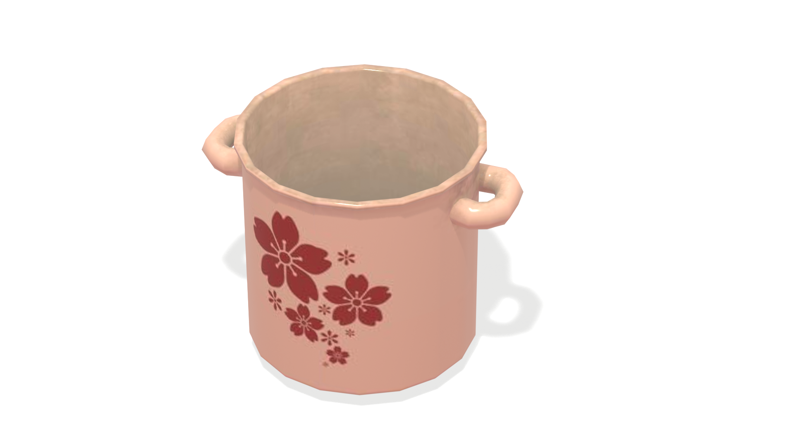
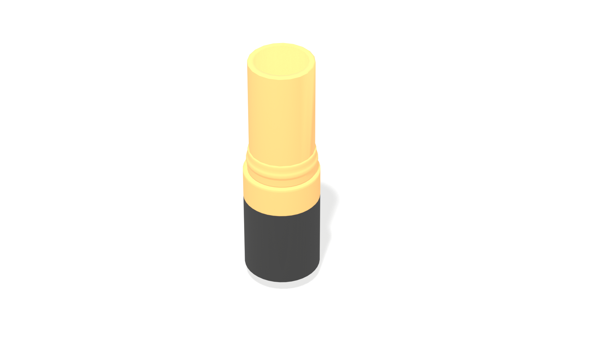
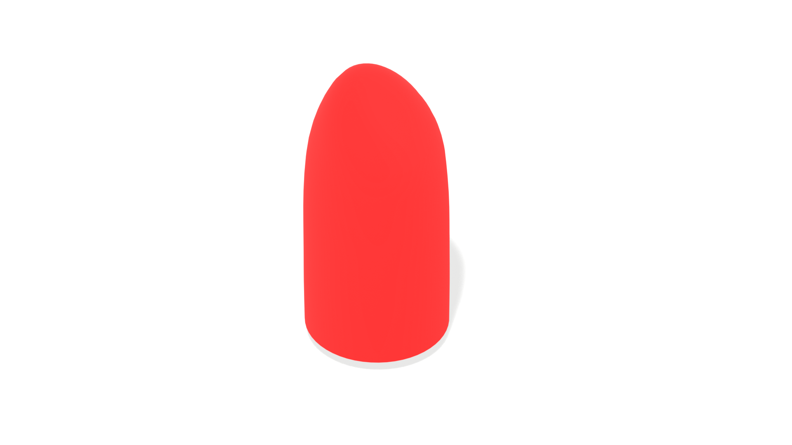
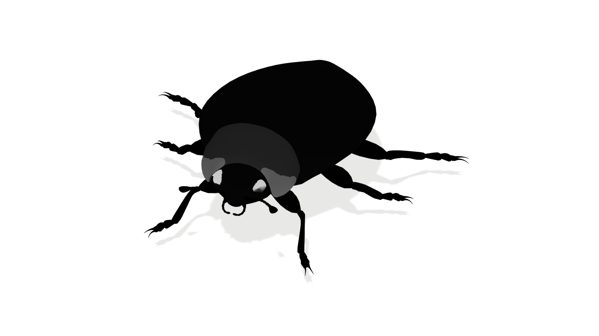

COPY-TRANSFORM-PASTE: Zero-Shot Object-Object Alignment Guided by Vision-Language and Geometric Constraints

Open PDF
Text-guided object-object alignment and iterative composition.
The figure shows four independent examples, each presenting the input meshes and text prompt alongside our alignment result.
In addition, an iterative example demonstrates progressive assembly of a burger: the output of stage \(k\) is incorporated into the input of stage \(k{+}1\), gradually forming the final arrangement.
Abstract
We study zero-shot 3D alignment of two given meshes, using a text prompt describing their spatial relation---an essential capability for content creation and scene assembly. Earlier approaches primarily rely on geometric alignment procedures, while recent work leverages pretrained 2D diffusion models to model language-conditioned object-object spatial relationships. In contrast, we directly optimize the relative pose at test time, updating translation, rotation, and isotropic scale with CLIP-driven gradients via a differentiable renderer, without training a new model.
Our framework augments language supervision with geometry-aware objectives: a variant of soft-Iterative Closest Point (ICP) term to encourage surface attachment and a penetration loss to discourage interpenetration. A phased schedule strengthens contact constraints over time, and camera control concentrates the optimization on the interaction region.
To enable evaluation, we curate a benchmark containing diverse categories and relations, and compare against baselines.
Our method outperforms all alternatives, yielding semantically faithful and physically plausible alignments.
Method Pipeline

Open PDF
Overview of the proposed pipeline. Given two meshes and a text prompt, we optimize the relative pose and scale to produce a text-consistent alignment over $P$ phases. In each phase, we compose the scene, render with a differentiable renderer to obtain a semantic loss, and compute geometric losses.
The best result of phase \(i\) initializes phase \(i{+}1\); across phases we increase the fractional soft-ICP and penetration weights and progressively zoom the cameras in. The final output is an aligned 3D placement of the two meshes.
Optimization Process Examples
Prompt: “Oyster with a pearl inside it”
Prompt: “Man wearing a cowboy hat”
Prompt: “Hot dog sausage sits inside a bun”
Prompt: “A stand with a golden necklace”
More Alignment Results
"A pizza cutter cuts a pizza"

Pizza mesh

Pizza cutter mesh
"Captain America holding a shield"

Captain America mesh

Shield mesh
"Nigiri"

Rice mesh

Fish mesh
"Slice of toast on top of a slice of cheese toast"

Toast mesh

Cheese toast mesh
"A target with an arrow stuck in it"

Target mesh

Arrow mesh
Orbit view of aligned pair
"A ceramic pot with a half-open lid"

Ceramic pot mesh
Orbit view of aligned pair
"A red lipstick"

Lipstick cover mesh

Red lipstick mesh
Orbit view of aligned pair
"Ladybug with its shell on top"

Ladybug body mesh
Orbit view of aligned pair